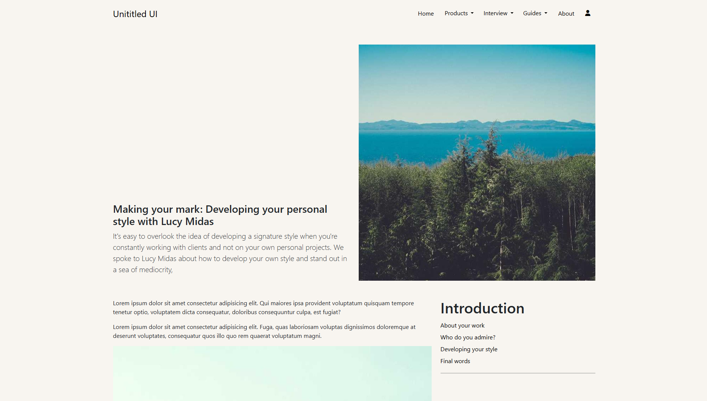

Blog Uygulaması
Blog Uygulaması
Son dönemde, front-end geliştirme yeteneklerimi güçlendirmek amacıyla Bootstrap üzerinde çalışıyorum.
Bu süreçte öğrendiklerimi pekiştirmek için bir blog şablonu geliştirdim ve sonuçlarını sizinle paylaşmak istiyorum! 🎯
💡 Proje Hakkında:
Bu proje, Bootstrap 5 ile oluşturulmuş, modern ve kullanıcı dostu bir blog şablonu.
Bootstrap öğrenme sürecimi hızlandırdı.